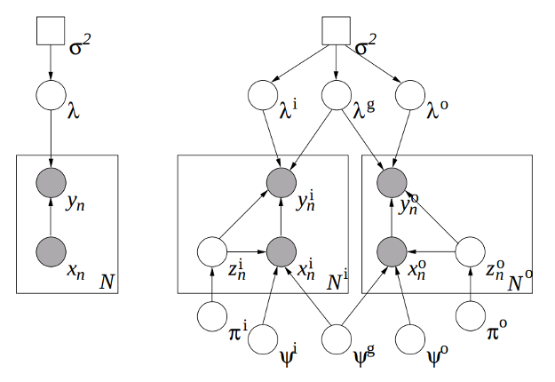

Domain adaptation for statistical classifiers
Daume III, Hal, and Daniel Marcu. “Domain adaptation for statistical classifiers.” Journal of Artificial Intelligence Research 26 (2006): 101-126.
Summary
Techniques used before this paper included:
- treat out-of-domain data as prior knowledge by performing a MAP estimate using this prior distribution
- use out-of-domain data to estimate a prior distribution in the context of a maximum entropy model, and this becomes the mean weights for a Gaussian prior for the in-domain data
- build an out-of-domain model and use its predictions as features for the in-domain data
This paper considers three distributions, \(q^{(o)}\), \(q^{(g)}\) and \(q^{(i)}\), where the out-of-domain distribution \(p^{(o)}\) is a mixture of a domain-specific and general distribution, \(q^{(o)}\) and \(q^{(g)}\). Likewise, the in-domain distribution \(p^{(i)}\) is a mixture of \(q^{(i)}\) and \(q^{(g)}\).
They apply it to log-linear conditional maximum entropy models and their linear chain counterparts.
Review of Maximum Entropy Models
The maximum entropy framework seeks the conditional distribution \(p(y | x)\) that is closest to the uniform distribution while matching a set of training data \(\mathcal{D}\) with respect to feature function expectations. That is, it seeks for the minimizer of \(\mathrm{KL}\big( p(y|x)\ \big|\big|\ \mathrm{uniform}(y)\big)\).
Introducing a Lagrange multiplier for each feature function \(f_i\) yields a probability distribution function of the form: \[\begin{equation}\label{class} p(y | x; \lambda) = \frac{1}{Z_{\lambda,x}} \mathrm{exp}\left[\lambda^\top \mathbf{f}(x,y)\right], \end{equation}\] called an exponential distribution or a Gibbs distribution. A regularization term is often included to prevent overfitting by placing a Gaussian prior over \(\lambda\) with mean 0 and covariance \(\sigma^2I\). Furthermore, we may assume that we can identify \(x\) with a binary feature vector, and so instead of \(\lambda^\top mathbf{f}(x,y)\), we can consider \(\lambda_y^\top x\). And so, the log-likelihood becomes: \[\mathcal{L} = - \frac{1}{2\sigma^2} \lambda^\top \lambda + \sum_{i=1}^N \left[\lambda_{y_i}^\top x_n - \log \sum_{y' \in \mathcal{Y}} \mathrm{exp}\left[\lambda_{y'}^\top x_n\right]\right] + C. \]
Maximum Entropy Genre Adaptation Model
This paper then extends the maximum entropy model to the maximum entropy genre adaptation (MEGA) model. This model assumes that each in-domain data point \((x^{(i)},y^{(i)})\) has a corresponding latent binary indicator \(z\) that is equal to 1 when the data point is drawn from \(q^{(i)}\) and 0 when drawn from \(q^{(g)}\) (likewise for out-of-domain data). The \(z\)’s are drawn from a Bernoulli distribution with parameter \(\pi^{(i)}\). And correspondingly, there are \(\lambda^{(i)}\), \(\lambda^{(g)}\) and \(\lambda^{(o)}\) for the three distributions \(q^{(i)}\), \(q^{(g)}\) and \(q^{(o)}\).
Finally, the model also assumes that the data \(x^{(i)}\) are drawn from Bernoulli distributions parametrized either by \(\psi^{(i)}\) or \(\psi^{(g)}\) (and likewise for \(x^{(o)}\)). The \(\psi\)’s are given a Beta prior. Thus, the generative story for an in-domain data point \(x^{(i)}\) is:
- select whether \(x^{(i)}\) will be in-domain or general-domain, indicated by \(z^{(i)}\), where \(z^{(i)} \sim \mathrm{Ber}(\pi^{(i)})\).
- For each component \(f\) of \(x^{(i)}\), choose \(x_f^{(i)}\) according to the distribution \(\mathrm{Ber}(\psi_f^{z^{(i)}})\).
- Choose \(y\) according to Equation \(\ref{class}\) using the parameter \(\lambda^{z^{(i)}}\).

Figure 1. (Left) standard logistic regression model (right) MEGA model.Linear Chain Model
The maximum entropy Markov model (MEMM) is obtained by assuming that the targest \(y_n\) are a sequence of labels. For example, parts of speech tagging may be achieved by introducing a first-order Markov assumption on the tag sequence (as a discriminative counterpart to the standard generative HMM).
Conditional Expectation Maximization
A nice summary comparing EM vs. CEM:
At a high level, EM is useful for computing in generative models with hidden variables, while conditional expectation maximization (CEM) is useful for computing in discriminative models with hidden variables.(Daume Marcu 2006).
The standard EM maximizes a joint likelihood over data. However, conditional models need to maximize the conditional likelihood: \[\begin{align} \mathcal{L} &= \log p(y|x;\theta) \nonumber \\ &= \log \sum_z p(z,x,y| \theta) - \log \sum_z p(z,x | \theta), \end{align}\] where we can’t apply Jensen’s to the second term (as we would to the first in the standard EM algorithm) to get a lower bound on the likelihood.
The CEM solution (Jebara Pentland 1998) is to bound the change in conditional log likelihood between iterations: \[\Delta \mathcal{L}^c = \log p(y | x; \theta^t) - \log p(y|x;\theta^{t-1}).\] Combine this with the (tight) upper bound, \(\log x \leq x - 1\) leads to the lower bound on the change in log likelihood: \[\Delta \mathcal{L}^c \geq Q^t:= \sum_{z \in \mathcal{Z}} h_z \log \frac{p(z,x,y|\theta^t)}{p(z,x,y|\theta^{t-1})} - \frac{\sum_z p(z,x | \theta^t)}{\sum_z p(z,x|\theta^{t-1})} + 1,\] where \(h_z = p(z | x; \theta)\).
The corresponding MAP estimate just adds a \(\log p(\theta)\) to \(Q^t\).
MEGA CEM
See section 5 of paper for derivation of CEM for the MEGA model and complete training algorithm.
Discussion
Question 1. Here, related knowledge is modeled by a general domain distribution \(q^{(g)}\) mixed with a domain-specific distribution. What non-distributional approaches to domain adaptation/transfer learning are there? Learning analogies?
Question 2. When one creates a model, how do you determine whether it is identifiable? How do they know MEGA is identifiable?
Further Reading
- [Jebara Pentland 1998] Maximum Conditional Likelihood via Bound Maximization and the CEM Algorithm